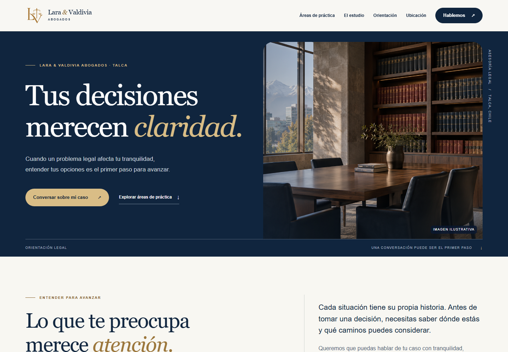

Una ficha que se puede completar.
Encontramos una ficha con el nombre del estudio. La vista consultada invitaba a agregar teléfono y sitio web; debemos confirmar titularidad y datos.
PROPUESTA PREPARADA PARA LARA & VALDIVIA ABOGADOS
Preparamos una web, una dirección de marca y un diagnóstico para ayudar al estudio a ser encontrado, reconocido y contactado.

VISTA DE LA WEB PROPUESTA · DEMOSTRACIÓN01 / EL PUNTO DE PARTIDA
Revisamos una búsqueda por nombre, la ficha pública de Google Maps y tres referentes locales el 3 de noviembre de 2026.
Encontramos una ficha con el nombre del estudio. La vista consultada invitaba a agregar teléfono y sitio web; debemos confirmar titularidad y datos.
En una búsqueda puntual, la respuesta de IA de Google describió a otra firma de nombre parecido. ChatGPT queda pendiente de una prueba directa.
Una web, perfiles y contenidos coherentes pueden ayudar a explicar sus servicios y facilitar el contacto con el estudio.
02 / LO QUE PREPARAMOS
Exploren la web adaptable, sus redes y aplicaciones corporativas. Son muestras para revisar junto al estudio.
La web propuesta, vista en cuatro formatos.
Abrir la web completa ↗03 / PROPUESTA DE INVERSIÓN
Recomendamos comenzar con la web. Si también quieren organizar y acompañar las consultas, pueden añadir el servicio mensual.
Una presencia propia para explicar quiénes son, qué servicios prestan y cómo contactarlos.
Revisión jurídica a cargo del estudio. Dominio y alojamiento se cotizan aparte.
Conversar sobre la web ↗Pueden contratar la web por sí sola, sumar uno de estos servicios o combinar ambos. Cada mensualidad se cobra por separado después de su activación.
Registrar contactos, avisar al equipo y facilitar la coordinación de citas.
Plan Captación y Seguimiento. Hasta dos mensajes autorizados por contacto; los consumos se cotizan aparte. El estudio atiende cada caso.
Consultar seguimiento ↗Mantener una presencia activa que explique sus servicios y responda dudas frecuentes.
Cada contenido se publica tras la aprobación del estudio. Incluye contenido orgánico; publicidad, producción audiovisual en terreno y respuesta de mensajes se cotizan aparte.
Consultar gestión de redes ↗Si activan ambos en el primer mes: $358.000 el primer mes ($199.000 de web + $159.000 de redes) y $159.000 al mes después. El seguimiento de consultas no está incluido en ese ejemplo.
Los valores son antes de impuestos aplicables. Dominio, alojamiento, publicidad y consumos de mensajería se cotizan aparte.
La configuración de los flujos indicados está incluida en el mensual correspondiente. Accesos, plazos, revisión, renovación y cancelación se acuerdan por escrito. Las campañas de publicidad se contratan aparte. No se garantizan consultas ni clientes.
04 / SIGUIENTE PASO
Revisemos juntos la muestra, confirmemos los datos del estudio y definamos el plan adecuado.